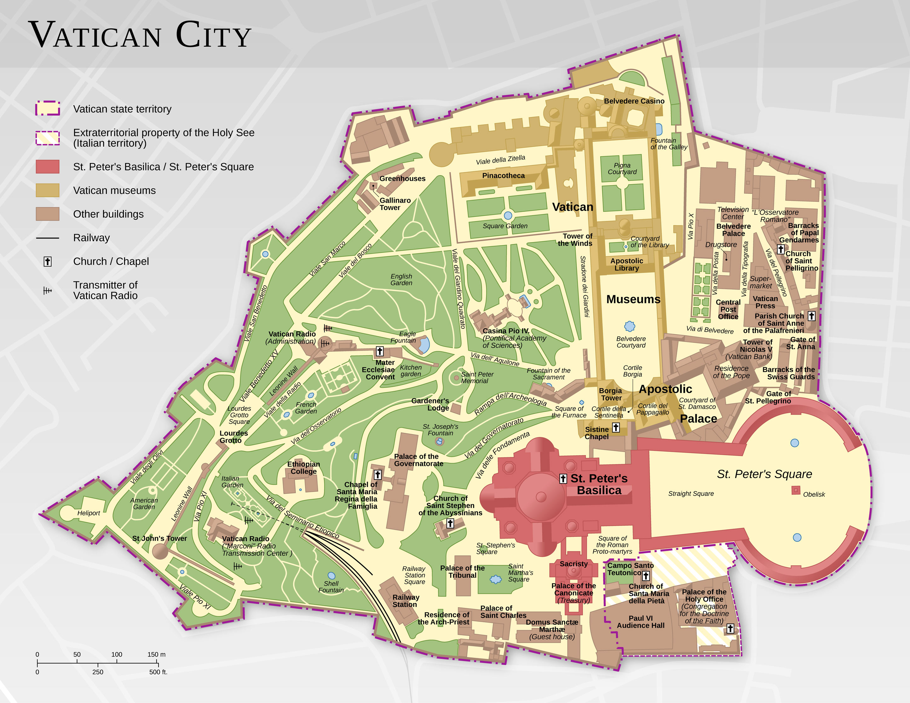
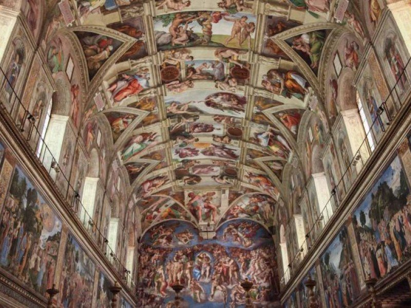
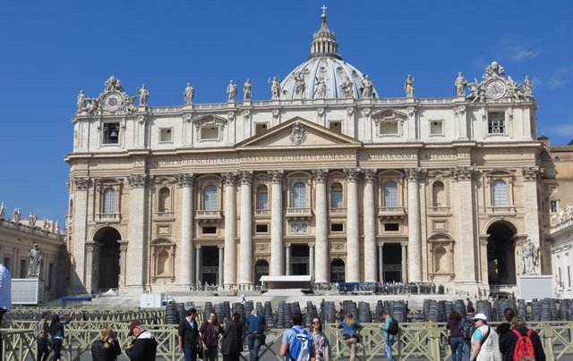
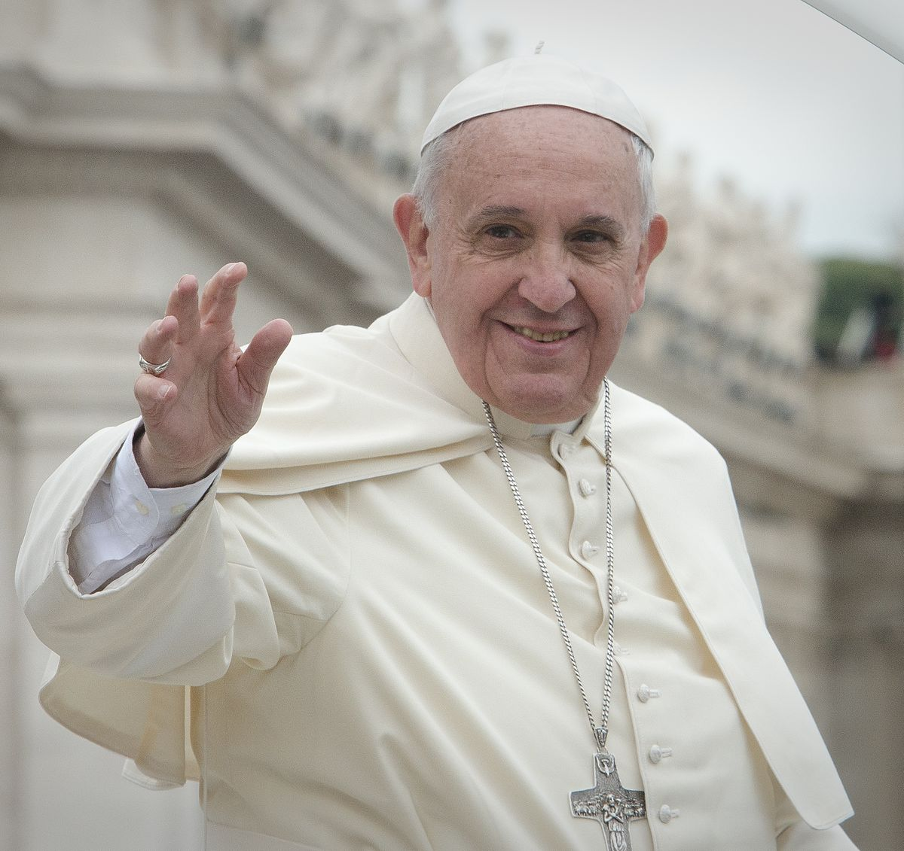

The Vatican City
- Vatican City, a city-state surrounded by Rome, Italy, is the headquarters of the Roman Catholic Church. It's home to the Pope and a trove of iconic art and architecture. Its Vatican Museums house ancient Roman sculptures such as the famed “Laocoön and His Sons” as well as Renaissance frescoes in the Raphael Rooms and the Sistine Chapel, famous for Michelangelo’s ceiling.

The Sistine Chapel
- The Sistine chapel is a chapel in the Apostolic Palace, the official residence of the Pope, in Vatican City. Originally known as the Cappella Magna, the chapel takes its name from Pope Sixtus IV, who restored it between 1477 and 1480. Since that time, the chapel has served as a place of both religious and functionary papal activity. Today it is the site of the Papal conclave, the process by which a new pope is selected. The fame of the Sistine Chapel lies mainly in the frescos that decorate the interior, and most particularly the Sistine Chapel ceiling and The Last Judgment by Michelangelo.
During the reign of Sixtus IV, a team of Renaissance painters that included Sandro Botticelli, Pietro Perugino, Pinturicchio, Domenico Ghirlandaio and Cosimo Rosselli, created a series of frescos depicting the Life of Moses and the Life of Christ, offset by papal portraits above and trompe l’oeil drapery below. These paintings were completed in 1482, and on 15 August 1483 Sixtus IV celebrated the first mass in the Sistine Chapel for the Feast of the Assumption, at which ceremony the chapel was consecrated and dedicated to the Virgin Mary.

St Peters Basillica
- Arguably one of the finest Cathedrals in the entire world, St. Peter's is the spiritual center of the Vatican and the product of many of Italy's great Renaissance's architects, among them Bramante, Raphael and Michelangelo.

Pope Francis
- Born in Buenos Aires, Argentina, on December 17, 1936, Jorge Mario Bergoglio became Pope Francis on March 13, 2013, when he was named the 266th pope of the Roman Catholic Church. Bergoglio, the first pope from the Americas, took his papal title after St. Francis of Assisi of Italy. Prior to his election as pope, Bergoglio served as archbishop of Buenos Aires from 1998 to 2013 (succeeding Antonio Quarracino), as cardinal of the Roman Catholic Church of Argentina from 2001 to 2013, and as president of the Bishops' Conference of Argentina from 2005 to 2011.